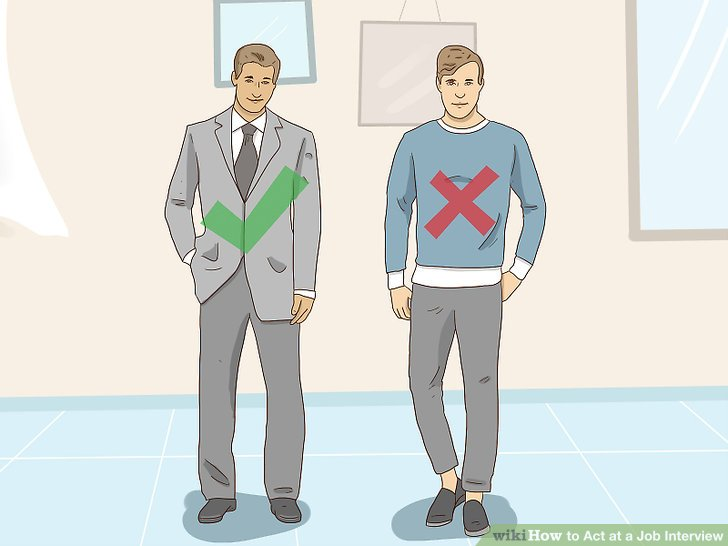

Job Interview Possible Questions to Practice with
The Best Tips for Job Interviews
Interview Attire
| What to Wear? | Jeans? | Dress? | Tie? |
|---|---|---|---|
| Interview? | No | Yes | Yes |
| Work? | No | Yes | Yes |

In the images above there are two different job interviews taking place. In the one with two people we see the professional handshake, eye contact and firendliness with the smile the woman is giving. In the other interview the woman is being interviewed by multiple people across a table. This situation may seem intimidating but staying calm and focused is important. We can see this woman is focused and has good posture showing her care for what she is saying.
In the last image we see two men standing next to eachother. This is an example of interview attire you should wear versus what you should'nt wear. Jeans, a tshirt and tennis shoes are not appropraite. You must demonstarte to the complany that you care and are able to be presentable for an important occasion such as getting a job. On the left side we see a man in a suit and tie with dress shoes. This shows that the interivew is important to him and he would be hired over the man coming in wearing jeans.
About the Author

Juliana Krueger is a student at FSU studying information technolgy.
Images courtesy of Google
Color Palette
Copyright, 2019, Juliana Krueger